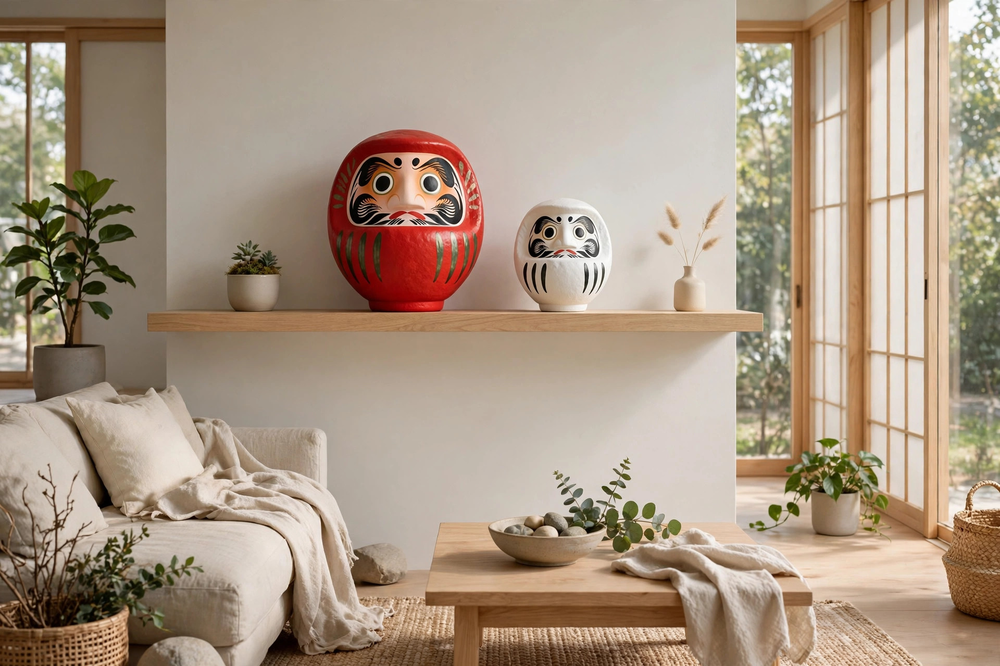

だるまのお手入れ方法 ― ほこりと日焼けから守るには

この記事の結論
だるまのお手入れの基本は「乾いた道具でほこりを払う」「水に濡らさない」「直射日光を避ける」の3つです。本体は紙を貼り重ねた張り子で、表面の色は胡粉や顔料で描かれています。水拭きは紙をふやかし、色落ちのもとになります。柔らかい刷毛や羽はたきで上から下へほこりを落とし、窓際の直射日光と湿気を避けて飾ることが、色と形を長く保つ近道です。
なぜ水拭きがいけないのか
伝統的なだるまの本体は、木型に紙を貼り重ねて作る「張り子」です（工程はだるまの作り方 ― 張り子の工程と素材で紹介しています）。紙は水を含むとふやけて弱くなり、表面の胡粉や顔料も水分で傷みやすくなります。顔の描き込み部分は特に繊細です。「汚れたから水で拭く」は、かえって傷める原因になります。掃除は必ず乾いた道具で行ってください。
ほこりの取り方
- 道具は柔らかいものを：毛先の柔らかい刷毛、羽はたき、乾いた柔らかい布が基本です。硬いブラシや化学ぞうきんは、表面を傷つけることがあるため避けてください。
- 上から下へ払う：頭のてっぺんから側面、底へと順にほこりを落とします。底の縁はほこりがたまりやすい場所です。
- 顔の部分はこすらない：目や髭などの描き込みは、払う程度にとどめます。強くこすると顔料が薄くなることがあります。
- 頻度に決まりはない：飾る場所のほこりの量によります。棚の掃除のついでなど、気づいたときに軽く払う習慣で十分です。
日焼け（色あせ）を防ぐ置き場所
だるまの赤をはじめとする色は、直射日光に長く当たると少しずつ褪せていきます。窓際など日光の当たる場所は避け、どうしても窓に近い場合は、レースのカーテン越しなど光の弱い位置に置いてください。飾り方のアイデアはインテリアとしてのだるまでも紹介しています。
あわせて避けたいのは湿気です。紙製のため、結露する窓際や浴室の近くなど湿気の多い場所では傷みやすくなります。安定した棚の上など、乾いた場所が向いています。置き場所の高さやサイズの目安はサイズと号数ガイドも参考にしてください。
汚れがついてしまったら
ほこり以外の汚れがついた場合は、まず乾いた布で軽く拭ってみてください。それでも落ちない汚れを無理に落とそうとすると、色ごと取れてしまうことがあります。多少の汚れは「使い込んだ味」として、そのままにしておくのが無難です。水や洗剤、アルコールでの清掃は避けてください。
長く飾らないときの保管
季節の入れ替えなどで一時的にしまう場合は、柔らかい紙でゆるく包み、湿気の少ない場所に保管してください。防虫剤を使うときは、本体に直接触れないよう離して入れます。再び飾るときは、包みを解いて軽くほこりを払えば十分です。なお、役目を終えたと判断しただるまの納め方については、だるまの処分と供養の方法にまとめています。
よくある質問
Q. だるまは水洗いできますか？
A. できません。本体は紙の張り子で、表面は胡粉や顔料で仕上げられています。水に濡らすと紙がふやけ、色落ちや変形のもとになります。掃除は乾いた柔らかい刷毛や布で行ってください。
Q. 色あせてしまったら直せますか？
A. 家庭で元に戻す方法はありません。上から塗り直すと描き込みの風合いが変わってしまいます。どうしても気になる場合は、購入先や産地の工房に相談できるか確認してみてください。
Q. お手入れはどのくらいの頻度で必要ですか？
A. 決まった頻度はありません。飾る場所のほこりの量に合わせて、棚の掃除のついでに軽く払う程度で十分です。
Q. ほこりが底の溝にたまります。どうすればいいですか？
A. 柔らかい刷毛の先でなでるように落としてください。強くかき出すと表面を傷めるため、取れない分は無理をしないのが長持ちのコツです。
まとめ
だるまのお手入れは、特別な道具や技術ではなく「乾いた道具で払う・濡らさない・日に当てない」の積み重ねです。紙と顔料でできた縁起物だからこそ、強い掃除は禁物。置き場所を一度見直すだけでも、色の持ちは変わります。
市に行けない方へ ― 名入れ・法人注文のご相談
DARUMA WORKSでは、産地の工房と連携した名入れだるま・オリジナルだるまの相談を受け付けています。事業紹介をご覧のうえ、お問い合わせフォームからご連絡ください。